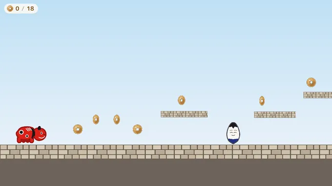
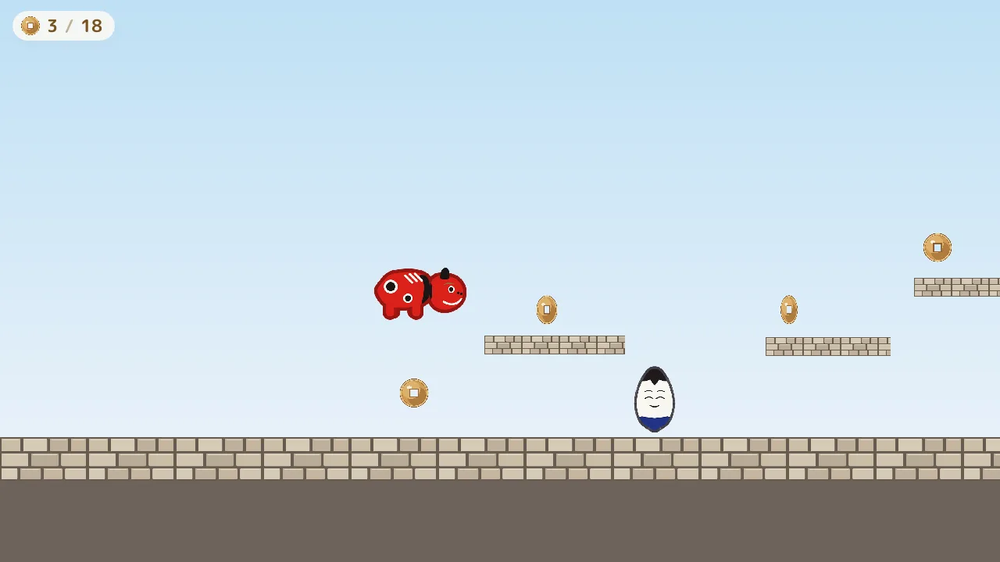

MitiruEngine
MitiruEngineRML / RCSS UI
C++ の値を RML / RCSS の画面へ
MitiruEngine では、ゲームの状態と処理を C++ に置き、スコア表示・メニュー・ダイアログを RML と RCSS で作れます。RML は HTML、RCSS は CSS の方言です。C++ が送った値を {{ }} と data-* 属性で受け取るため、接続用のスクリプトは不要です。

構成
C++ から画面へ値を送り、画面から C++ へ操作を通知します。ゲームの状態は C++ 側で管理します。画面はエンジンがゲームの絵と同じフレームの上に描くので、headless での撮影やリプレイにも UI が写ります。
hud.set で表示値を送り、dispatch(...) でボタンなどの操作を返します。使用するファイル
HUD やメニューは、ゲームの DLL の隣の assets/ui/main.rml に記述します。エンジンがこの文書をゲーム画面の上に重ねます。保存すると、ゲームを止めずに読み直します。C++ の送信処理は、引数に Hud hud を持つ update(Input in, Hud hud, float dt) などから呼び出します。
エンジン同梱の RCSS
RmlUi にはブラウザの既定スタイルが無いので、文書の頭でエンジン同梱の RCSS を読みます。tokens.rcss は配色や文字の大きさの変数、components.rcss はボタンやバー、ダイアログの部品です。使わないものは読まなくてかまいません。
<link type="text/rcss" href="mitiru:base.rcss"/> <link type="text/rcss" href="mitiru:tokens.rcss"/> <link type="text/rcss" href="mitiru:components.rcss"/>
値を表示する
C++ が view. で始まる名前で送った値は、data-model="view" を付けた要素の中で、view. を除いた名前で引けます。
C++
hud.set("view.score", score);
hud.set("view.combo", combo);
hud.set("view.boss", "{\"active\":true}");
RML
<body data-model="view">
<span>{{ score | comma }}</span>
<p>コンボ {{ combo }} 連鎖！</p>
<div data-if="boss.active">…</div>
</body>
文字列が [ か { で始まると JSON として読むので、配列やオブジェクトも送れます。式の中の < と > は < > と書きます。
主な書き方
基本的な HUD は {{ }} で作れます。条件表示、RCSS の変更、入力、可変リストにも同じ方式を利用できます。
{{ x }} |
値を文字として表示します。<span>{{ score }}</span> |
{{ x | 書式 }} |
comma、kmb、pct、time、int、f2 で数値を整形します。 |
data-ifdata-visible |
条件に応じて要素を表示または非表示にします。比較式と ! による否定も使えます。 |
data-class-名前 |
条件が成立したときに指定クラスを追加します。<div data-class-danger="hp <= 20">…</div> |
data-style-名前 |
値を RCSS のプロパティへ反映します。<div data-style-width="hp + '%'"></div> |
data-attr-名前 |
src や title などの属性へ値を設定します。 |
<flash> |
data-attr-watch の値が変わった直後に m-flash クラスを一時的に付けます。 |
<tween> |
数値の変化を約 0.3 秒で補間して表示します。 |
<toast> |
{kind, message} が変わると文を出し、決めた時間の後に is-visible を外します。 |
dispatch(...) |
クリックなどの操作を C++ へ通知します。data-event-click などに書きます。 |
confirm(...)prompt(...) |
確認または文字入力のダイアログを挟み、OK のときだけ操作を通知します。 |
commit_inputlive_input |
入力欄の文字を送ります。前者は Enter か欄を離れたとき、後者は 1 文字ごとです。IME で変換中は送りません。 |
data-for |
配列の数だけ要素を複製します。詳細はリスト表示で説明します。 |
drop(...) |
drag-value を付けた要素を掴み、落とした先から {from, to} を送ります。 |
条件に応じて RCSS のクラスを付ける
<div class="hpbar" data-class-danger="hp <= 20">…</div>
<style>
.hpbar.danger {
color: #ff0000;
animation: 1s infinite blink;
}
</style>
view.hp が 20 以下になると danger クラスが追加されます。
値を RCSS のプロパティへ反映する
<div class="bar"> <div class="fill" data-style-width="hp_pct + '%'"></div> </div>
hud.set("view.hp_pct", 62) を実行すると、fill の幅が 62% になります。
値の変化を表示に使う
<flash class="pop" data-attr-watch="score">{{ score }}</flash>
<style>
.pop.m-flash { animation: 0.3s cubic-out pop; }
</style>
<tween data-attr-value="score" format="comma"/>
どちらの動きも、エンジンがフレーム数から作る時計で進みます。リプレイでは途中の絵まで同じになります。
操作を C++ へ伝える
ボタンの data-event-click に dispatch を書くと、操作名が C++ へ届きます。名前の後ろに値を 1 つ書くとその値が、キーと値の組を書くと JSON のオブジェクトが添えられます。
<button data-event-click="dispatch('start')">はじめる</button>
<button data-event-click="dispatch('select', 'hard')">むずかしい</button>
<input type="range" min="0" max="10" data-attr-value="volume"
data-event-change="dispatch('volume', ev.value)"/>
if (in.action("start"))
startGame();
if (in.action("select"))
chooseDifficulty(in.actionPayload("select")); // "\"hard\""
パッドで選ばせたい部品には RCSS で tab-index: auto; nav: auto; を付けます。十字キーと左スティックで選び、A で押せます。同梱の components.rcss では m-nav の中の部品がこの形です。
テキスト入力
<input type="text" data-event-change="commit_input('profile.name')"
data-event-blur="commit_input('profile.name')"/>
<input type="text" data-event-change="live_input('search.q')"/>
確定時には input:profile.name という操作名と {"value": 入力した文字} が届きます。入力欄を選んでいる間はエンジンが IME を有効にし、変換中の文字を欄の中に下線つきで出します。
if (in.action("input:profile.name"))
setName(in.actionPayload("input:profile.name"));
可変リストを表示する
手札、インベントリ、ランキングなどは、C++ が JSON の配列で送り、RML の data-for で表示します。
<div class="hand">
<div class="card" data-for="c : hand"
data-event-click="dispatch('play', 'id', c.id)">
<span>{{ c.cost }}</span>
<span>{{ c.name }}</span>
</div>
</div>
リスト内では、項目のフィールドを c.name のように指定します。C++ 側では StateWriter の array() または list() で組み立て、hud.set で送ります。data-for は要素を並び順で使い回すので、項目が並び替わったときに要素を滑らせる演出はできません。
文言の翻訳とボタンの絵柄
RML の文の中の [menu.start] は、文書の隣の strings.json にある今の言語の訳に置き換わります。[coins:{{ coins }}] のように数を付けると、言語ごとの複数形を選びます。設定で言語を変えると、エンジンが文書を読み直して訳し直します。
<img src="glyph:jump"/> は、操作 jump に割り当てたボタンの絵を、今使っている機器 (キーボードかパッドか) とパッドの機種 (Xbox / PlayStation / Nintendo) に合わせて表示します。プレイヤーが割り当てを変えたり、パッドに持ち替えたりすると絵も変わります。
<p>[menu.start]</p> <p><img src="glyph:jump"/> [hint.jump]</p>
実装例
「はじめてのゲーム」で使用している assets/ui/main.rml の例です。C++ から view.coins、view.total、view.cleared を送り、RML で受け取ります。接続用のスクリプトは記述していません。

{{ }} で、クリア表示を data-class-show で出しています。<!-- assets/ui/main.rml -->
<rml>
<head>
<link type="text/rcss" href="mitiru:base.rcss"/>
<style>
body { pointer-events: none; }
.coins {
position: absolute;
top: 14px;
left: 16px;
display: flex;
align-items: center;
gap: 8px;
padding: 6px 16px 6px 10px;
border-radius: 19px;
background-color: #fffcf6d1;
color: #7a5320;
font-weight: bold;
font-size: 22px;
}
.coins img {
width: 26px;
height: 26px;
}
.clear {
position: absolute;
top: 0px; right: 0px; bottom: 0px; left: 0px;
display: flex;
align-items: center;
justify-content: center;
background-color: #14141e00;
opacity: 0;
transition: opacity background-color 0.45s cubic-out;
}
.clear.show {
background-color: #14141e6b;
opacity: 1;
}
.clear span {
color: #ffffff;
font-size: 74px;
font-weight: bold;
transform: scale(0.82);
transition: transform 0.45s back-out;
}
.clear.show span {
transform: scale(1);
}
</style>
</head>
<body data-model="view">
<div class="coins">
<img src="../sprites/coin.png"/>
<span>{{ coins }}</span>
<span>/</span>
<span>{{ total }}</span>
</div>
<div class="clear" data-class-show="cleared > 0">
<span>クリア！</span>
</div>
</body>
</rml>
C++ 側では、表示に使う値を次のように送ります。
void BekoRun::pushHud(Hud hud) const {
hud.set("view.coins", coins);
hud.set("view.total", NCOIN);
hud.set("view.cleared", cleared ? 1 : 0);
}
影、角丸、グラデーション、@keyframes、transition、backdrop-filter などを使えます。CSS と書き方が違う所 (半透明色の書き方、グラデーションの指定、grid や疑似要素が無いこと) は docs/UI_RMLUI.md の対応表にまとめています。
確認方法
C++ が送っていない名前を RML で指定してもエラーにはならず、その場所は空のまま表示されます。値が更新されない場合は、次を確認します。
- C++ の
hud.setの名前からview.を除いたものと、RML の名前が完全に一致しているか。 - 値を受信していても、RCSS によって要素が見えない状態になっていないか。
- flex の直下に裸の文字を置いていないか。RmlUi は描かないので、
<span>で包みます。
--headless-3d で撮った画面には UI も写るので、実行画面の画像で確かめられます。
はじめてのゲームで基本的な制作手順を確認できます。書き方の詳細は docs/UI_RMLUI.md にも掲載しています。